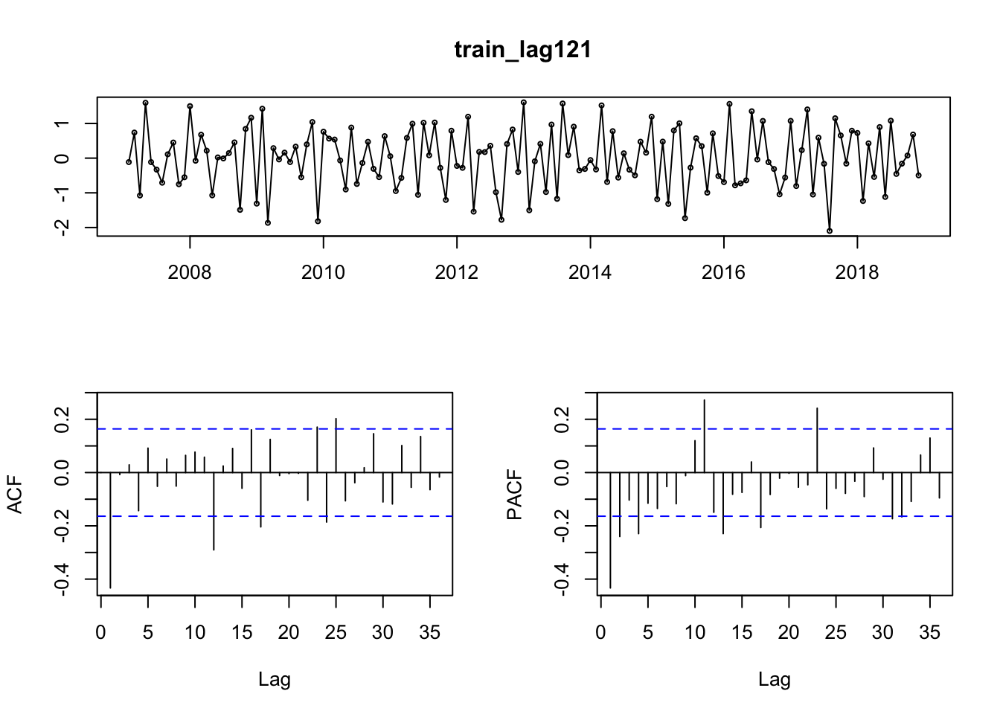
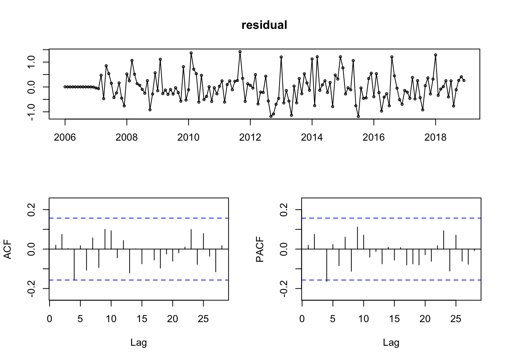
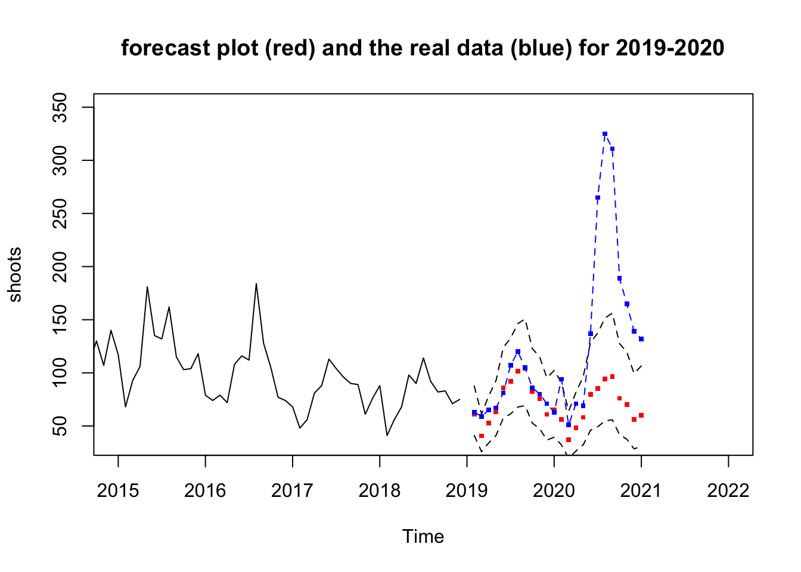

Regression Model
Goal
In this section the goal is to apply the time series analysis to fit a model to predict future New York shooting occurrences in one month. We will use the data from New York police department and count the shooting events for each month from Jan 2006 to Dec 2020.
We want to use the SARIMA model to fit the seasonal pattern of the shooting occurrences plus forecast the future monthly occurrences. Model selection and diagnostic will be performed to obtain a good quality model.
We are also interested about whether the COVID affects the shooting patterns. So we use the 2006 - 2018 data as the training set, and 2019-2020 data as the test set to compare with the prediction of the SARIMA model.
Data visualization
First we make a time series plot about the data and try to observe the trend, variability and the seasonality.
From this plot we can observe:
For the trend, the average shooting events is actually decreasing overtime, except the last year 2020, after COVID outbreak, there was a huge spike of occurrences.
For the variation, it seems except the last year, the variation tends to decrease.
For the seasonality, there is a very significant seasonality that in winter there are less shootings and in summer there are more. Probably because winter people will not go out so much compared to summer.
Also we can check the seasonality by plot each years data by different colors. From the plot below there is a clear spike in summer for all of the years.
Data transformation
Now we need transformation to make the data suitable for fitting the SARIMA model. The SARIMA model assumes the data need to be stationary, without any seasonality trend, and have equal variance.
First we check whether we need to apply a box-cox transformation to stablize the variance.

As the 95% interval for the best lambda parameter of the box cox transformation does not include 1, so we should use the box cox transformation with lambda = 0.263.
Then to remove the seasonality trend, we apply a log 12 difference. It does not seems very stationary, so we apply additional lag 1 difference. Now it looks quite good and we can proceed to select the model.
Model selection
First let us check the sample ACF, PACF of the series after transformation:

The ACF plot, in non seasonality part (< lag 8), we have significant lag 1 only, and the seasonality part have significant lag 12 and marginally significant lag 24, so the MA part could be MA1, and the SMA part should be 1 or 2.
The PACF plot, in non seasonality part (< lag 8), the lag tails off, and for the seasonality part, also we can observe the lag spike tails off, (or it’s the first 2 significant). So the AR part should be 0 and the SAR part can be 0 or 2.
So the most probable candidate models should be \(SARIMA(p,1,q)(P,1,Q)_{12}\) with \(p=0\), \(q = 1,2\), \(P = 0, 2\), \(Q = 1,2\).
We fit those models and calculate the AICc of those models fitted by R. The result is:
| Model | AICc |
|---|---|
| SARIMA(0,1,1)(0,1,1)_12 | 262.6220 |
| SARIMA(0,1,1)(0,1,2)_12 | 264.0517 |
| SARIMA(0,1,1)(2,1,1)_12 | 265.7343 |
| SARIMA(0,1,1)(2,1,2)_12 | 268.0756 |
| SARIMA(0,1,2)(0,1,1)_12 | 264.6530 |
| SARIMA(0,1,2)(0,1,2)_12 | 265.9070 |
| SARIMA(0,1,2)(2,1,1)_12 | 267.5682 |
| SARIMA(0,1,2)(2,1,2)_12 | 269.7245 |
From the table, the model \(SARIMA(0,1,1)(0,1,1)_{12}\) has the smallest AICc so it’s the best. The model summary is:
## Series: train1
## ARIMA(0,1,1)(0,1,1)[12]
##
## Coefficients:
## ma1 sma1
## -0.7592 -0.8463
## s.e. 0.0629 0.0917
##
## sigma^2 estimated as 0.3194: log likelihood=-128.22
## AIC=262.45 AICc=262.62 BIC=271.34
##
## Training set error measures:
## ME RMSE MAE MPE MAPE MASE
## Training set -0.01589969 0.5372774 0.4100619 -0.3197275 4.304198 0.6802193
## ACF1
## Training set 0.0195208And the mathematical form is: (After box cox transformation with lambda = 0.263)
\[ (1-B)(1-B^{12})X_n=(1-0.7592B)(1-0.8463B^{12})Z_n \]
\[ Z_n \overset{iid}\sim N[0,0.3194]\]
Model diagnostic
First we check the ACF and PACF of the residual. The residual should assemble white noise so the AFC and PACF should not contain any significant spikes. From the ACF and PACF plot, except lag4 is marginally significant, all others are good, so we think the residual is similar to white noise for the ACF and PACF.

From the result, except for the lag 14 very marginally spike of the ACF and PACF (Which may because some complex patterns in the data), all other lags are insignificant, so we can believe the ACF and PACF of the residual is quite similar to the white noise.
Then check the inverse polynomial roots. The characteristic roots should be outside the unit circle to assure the model stationary and invertible, thus the inverse characteristic roots should be inside the unit circle. From the plot below all the inverse characteristic roots are inside the unit circle. so the model is legible.

Next we check the model residual independence:
Use Box - Pierce test, Ljung - Box test and McLeod - Li test. The training data have 156 observations, model parameters 2, so the degree of freedom should be 12, 12, 14 respectively.
| tests | p.value | df |
|---|---|---|
| Box-Pierce | 0.2836037 | 12 |
| Ljung-Box | 0.2311293 | 12 |
| McLeod-Li | 0.9971713 | 14 |
All of the independence tests pass with p value > 0.05, so our residual does not have any sequential correlation.
Forecast
Now we forecast the model on the test set:

The forecast result shows that in 2019, all blue points (real values) are inside the 95% confidence interval, and actually quite close to the predicted red points. But in 2020, nearly all predicted value are smaller than the actual value, and in summer the actual value is much higher than the predicted ones.
This is because after April the COVID outbreaks in US. The economy was greatly suffered so the social become violent thus much more shooting occurs. Our SARIMA model can’t take that COVID event into consideration, and still predict it as the COVID does not exist, so that’s why our predicted values are much smaller than the actual values. In fact, no model can forecast those black swarm events.
Also from the disparity of the predicted and actual shooting numers in 2020, we can have a feeling of how big influence that COVID bring to US.